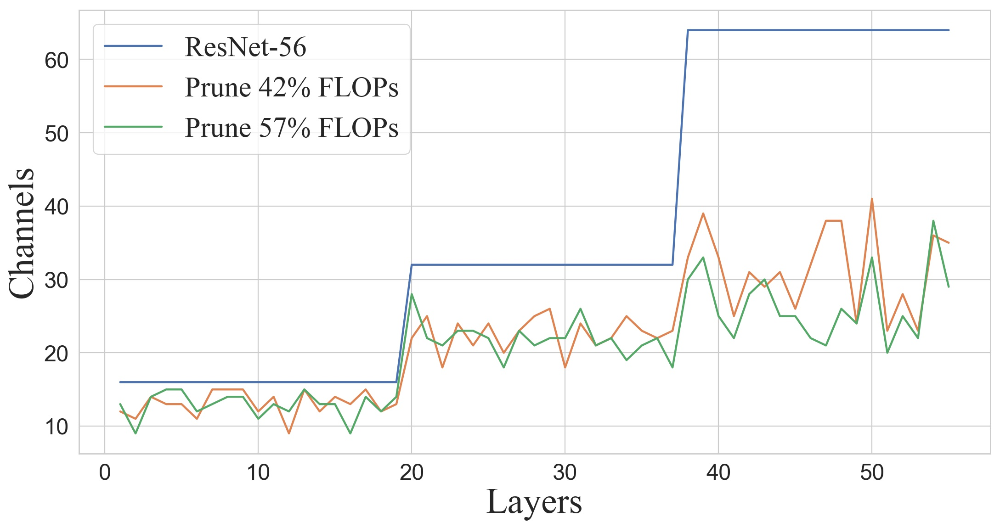
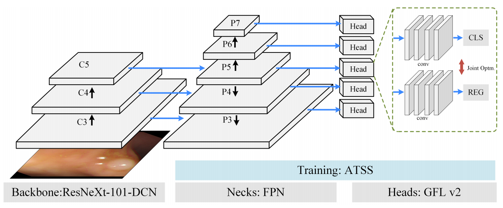
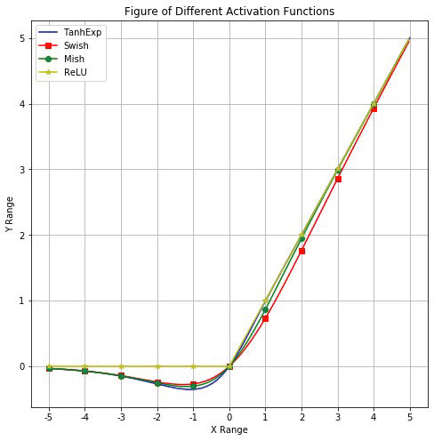
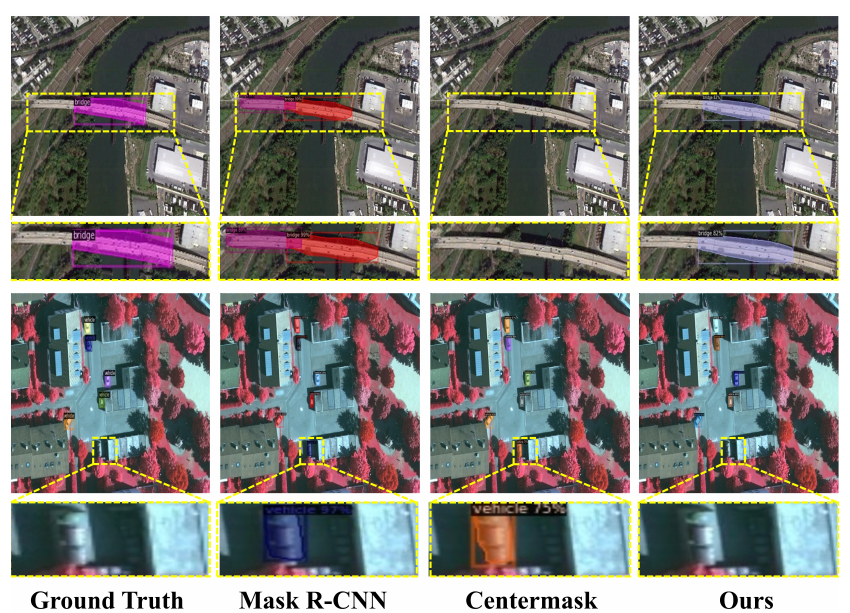
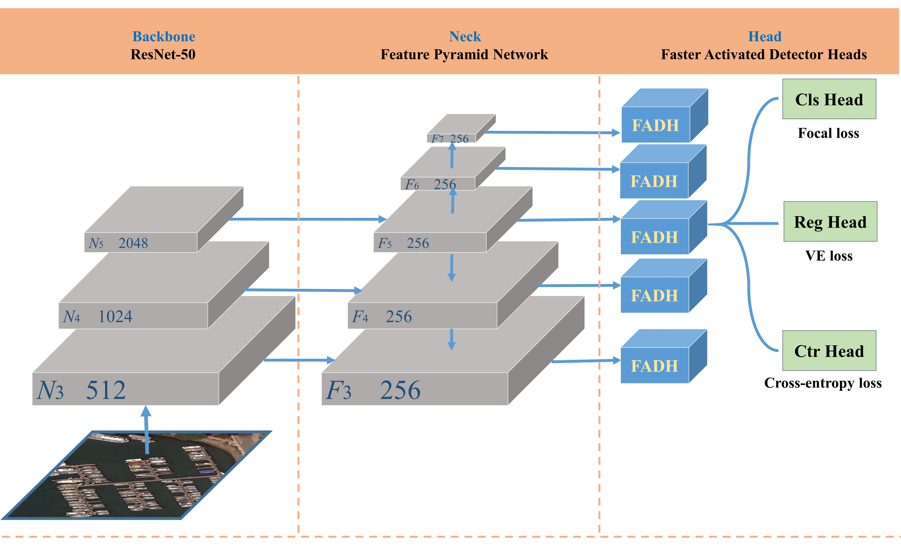

Xinyu Liu
I am a Ph.D candidate at AIM Group in EE department, City University of Hong Kong, supervised by Dr. Yixuan Yuan. I focus on Deep learning, Computer vision, and Medical image analysis. Before that, I received my M.Sc. degree with the Department of Control Science and Engineering, Harbin Institute of Technology and B.Sc. Degree at Honors School, Harbin Institute of Technology, where I was supervised by Prof. Xiaoguang Di.
News
Publications
I'm interested in building efficient models with unsupervised domain adaptation, pruning for classification/detection/segmentation/super resolution tasks.
Conference Papers:
|  | Exploring Gradient Flow Based Saliency for DNN Model Compression Xinyu Liu*, Baopu Li*, Zhen Chen, Yixuan Yuan. ACM Multimedia 2021 (ACM MM 2021), 2021 |
|  | Joint Polyp Detection and Segmentation with Heterogeneous Endoscopic Data Wuyang Li, Chen Yang, Jie Liu, Xinyu Liu, Xiaoqing Guo, Yixuan Yuan. IEEE International Symposium on Biomedical Imaging Endoscopy Workshop (EndoCV 2021), 2021 |
Journal Papers:

|
Consolidated domain adaptive detection and localization framework for cross-device colonoscopic images Xinyu Liu, Xiaoqing Guo, Yajie Liu, Yixuan Yuan. |
|  | TanhExp: A Smooth Activation Function with High Convergence Speed for Lightweight Neural Networks Xinyu Liu, Xiaoguang Di. IET Computer Vision (IET-CVI), 2021 |
|  | Global Context Parallel Attention for Anchor-free Instance Segmentation in Remote Sensing Images Xinyu Liu, Xiaoguang Di. IEEE Geoscience and Remote Sensing Letters (GRSL), 2020 |
|  | Vector Encoded Bounding Box Regression for Detecting Remote Sensing Objects with Anchor-free Methods Xinyu Liu, Xiaoguang Di, Junde Wu, Jiehao Huang. International Journal of Remote Sensing (IJRS), 2020 |
Experience
|
Deepwise
Research Intern, May. 2019 - Jul. 2019 |